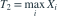
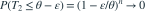

是来自 的独立样本，
是来自 的独立样本， 。比较 与
。比较 与 
，下列说法正确的是哪项？- A二者都无偏且相合
- B二者都相合，只有 T1 无偏
- C只有 T1 相合
- D只有 T2 无偏
我已思考，展开答案与解析
正确答案：B
- ，且由大数定律 依概率收敛到
 。
。 - ，有限样本有偏；但对 ，

，故相合。
易错提醒无偏性是有限样本性质，相合性是样本量增大时的性质。
原模拟卷 A · 模拟卷 A 第 36 题
原创
是来自 的独立样本，。比较 与 
，下列说法正确的是哪项？。
，故相合。原模拟卷 A · 模拟卷 A 第 36 题
原创